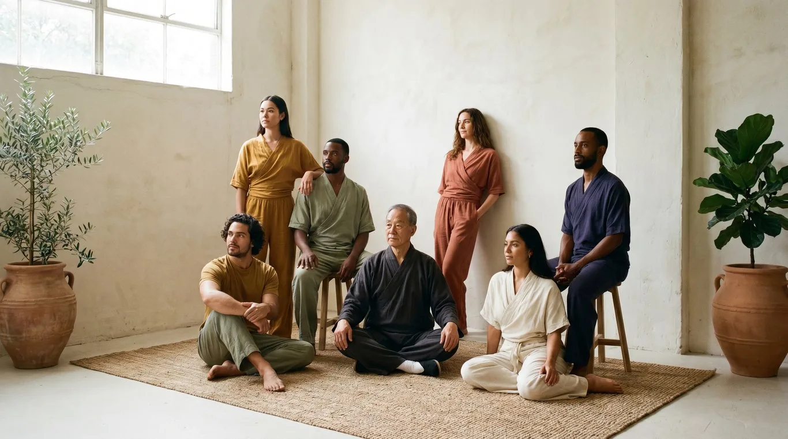

Move slowly, on purpose.
Pilates, yoga and floor work in a room with tall windows and twelve mats. Small classes, the same teachers every week.
Book a first class
12 matsso the teacher sees everyone
Classes
Four kinds of class, one pace.
- 01
Mat pilates
Strength from the centre out, with small, exact movements.
Sun, Tue, Thu 7:00 - 02
Slow flow
Yoga that holds each shape for five breaths before moving on.
Mon, Wed 19:00 - 03
Floor work
Rolling, crawling and lying down, to move without pain again.
Tue 18:00 - 04
Breath
Thirty minutes of breathing and stillness before work.
Fri 8:00



Nobody here is late, behind or doing it wrong. You come in, you lie down, and we start from where your body is today.Noa, who teaches the morning classes
Your first class is on us.
Bring nothing but comfortable clothes. Mats, blocks and water are here.
- Sunday to Thursday
- 7:00 to 21:00
- Friday
- 8:00 to 13:00